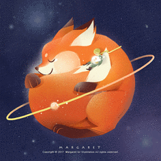

-
小王子
小王子，小说就是以他命名的，是一个神秘可爱的孩子。他是那个小星球唯一居民。小王子离别自己的星球和所爱的玫瑰花开始了宇宙旅行，最后来到了地球。
- 
狐狸
小王子在沙漠见到狐狸。聪明的狐狸要求小王子驯养他，虽然狐狸在两者中显得更有知识，他使小王子明白什么是生活的本质。
-
玫瑰
不懂爱情且略有“矫情”的花儿。她的内心爱慕、依赖、渴望着小王子，但是自身性格的缺陷却使她不能完全表达自己对小王子的情谊，导致小王子出走。
-
蛇
蛇是小王子在地球遇到的第一个人物；也是他最终咬了小王子，把小王子送回天堂。蛇告诉小王子自己在人间很孤独，使小王子认为蛇非常弱小。但蛇告诉小王子自己掌握着生命的谜。